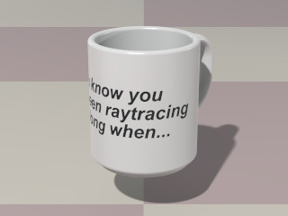
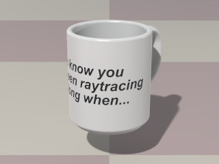
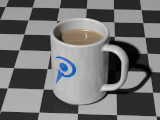
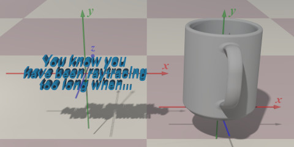
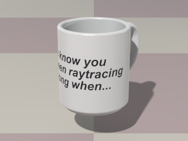

{kind=link}
![[How CoffeeMug_Pigment() or CoffeeMug_Texture() orients the object]](coffeemug_fig4.jpg) 

A library module from the Persistence of Vision Ray Tracer (POV-Ray) Object Collection.
 Some objects, though not used directly in office work, are nevertheless indispensable for the efficient functioning of the office.
| Key Files | |
|---|---|
| File | Description |
coffeemug.html | The user manual (this document) |
coffeemug.inc | The CoffeeMug software |
coffeemug.jpg | Sample output |
coffeemug.pov | An example scene file |
READMEnnnnnn.html |
Important information that you need to know |
| Other Files | |
| File | Description |
coffeemug.css | A support file for the user manual |
coffeemug_cc-lgpl.png |
Support illustrations for the user manual |
coffeemug_fig1.jpg | |
coffeemug_fig4.jpg | |
coffeemug_fig5.jpg | |
coffeemug_thumbnail.jpg | |
coffeemug_description.txt | A brief description of CoffeeMug |
coffeemug_keywords.txt | A list of keywords |
coffeemug_prereqs.txt | Prerequisites (empty file) |
cc-LGPL-a.png | Administrative support file |
Versionnnnnnn.js |
Administrative support file |
The file coffeemug.inc defines macros that create a coffee
mug and a beverage to fill it. Include this file once prior to using the macros:
#include "coffeemug.inc"
Including the file more than once is harmless, though unnecessary.
None.
All file names, global identifiers, and local identifiers comply with the
Object Collection naming standards. The case-insensitive prefix for this module
is “coffeemug.”
An untextured coffee mug, with the handle pointing in the negative z direction.
Arguments:
Radius: Capacity: Units argument.
Units: Use_merge:
yes
if the mug is to be transparent, no otherwise.
An untextured coffee mug with more user control over the dimensions. The handle points in the negative z direction.
Arguments:
Radius: Wall: Capacity: Units argument.
Units: Handle: Handle_space:
Use_merge:
yes
if the mug is to be transparent, no otherwise.
A beverage pre-sculpted to fit the coffee mug. The object is untextured, allowing the user the choice of coffee black, café au lait, cocoa, tea, apple cider, Dasani®, rum and Coke®, or any of a number of other quaffs. The object will not contour to the rim of the mug, and no carbonation is provided for the rum and Coke.
Arguments:
Radius: Wall: 0.0 if the mug is created with CoffeeMug_Mug().
Capacity: Units argument.
Units: COFFEEMUG_HEIGHT, the meniscus will not be modeled.
Epsilon: Computes the height of a cylinder, given its capacity and radius.
Arguments:
Radius: Capacity: Units argument.
Units: Returns a cylindrically-mapped block pigment from a user-supplied object. A slice is taken at the x-y plane, transformed to the middle-front of the mug, and wrapped around the mug. The object should be centered on the origin.
Arguments:
Radius: Wall: 0.0 if the mug is created with CoffeeMug_Mug().
Capacity: Units argument.
Units: o_Print: p_Background: p_Foreground: These illustrations show how an object is mapped to the mug.


Returns a cylindrically-mapped block texture from a user-supplied object. A slice is taken at the x-y plane, transformed to the middle-front of the mug, and wrapped around the mug, as shown in these illustrations. The object should be centered on the origin.
Arguments:
Radius: Wall: 0.0 if the mug is created with CoffeeMug_Mug().
Capacity: Units argument.
Units: o_Print: t_Background: t_Foreground: | Code | Linear Unit | Liquid Measure (Volume) |
|---|---|---|
COFFEEMUG_HEIGHT |
Arbitrary | The capacity argument is used as the height |
COFFEEMUG_INCH |
Inches | Fluid ounces |
COFFEEMUG_CM |
Centimeters | Milliliters |
COFFEEMUG_MM |
Millimeters | Milliliters |
Any identifiers in coffeemug.inc that are not documented in this
manual are subject to change or elimination in a future update.

| Version | Date | Notes |
|---|---|---|
| 1.0 | August 7, 2008 | Software created. |
| 1.1 | August 8, 2008 | Texture options added. |
| 1.2 | August 31, 2008 | Namespace compliance is extended. |
User Manual (this document) updated August 31, 2008.
Coke® and Dasani® are registered trademarks of the Coca-Cola Company. No endorsement is implied.